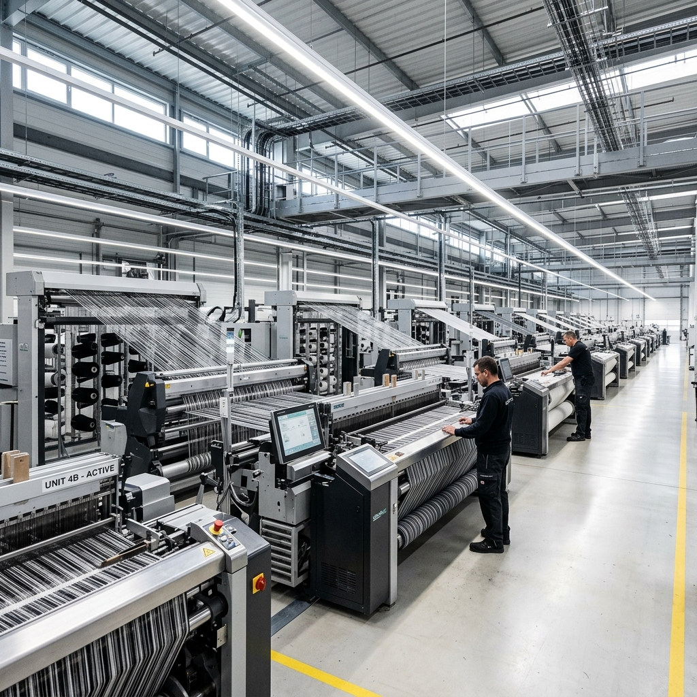
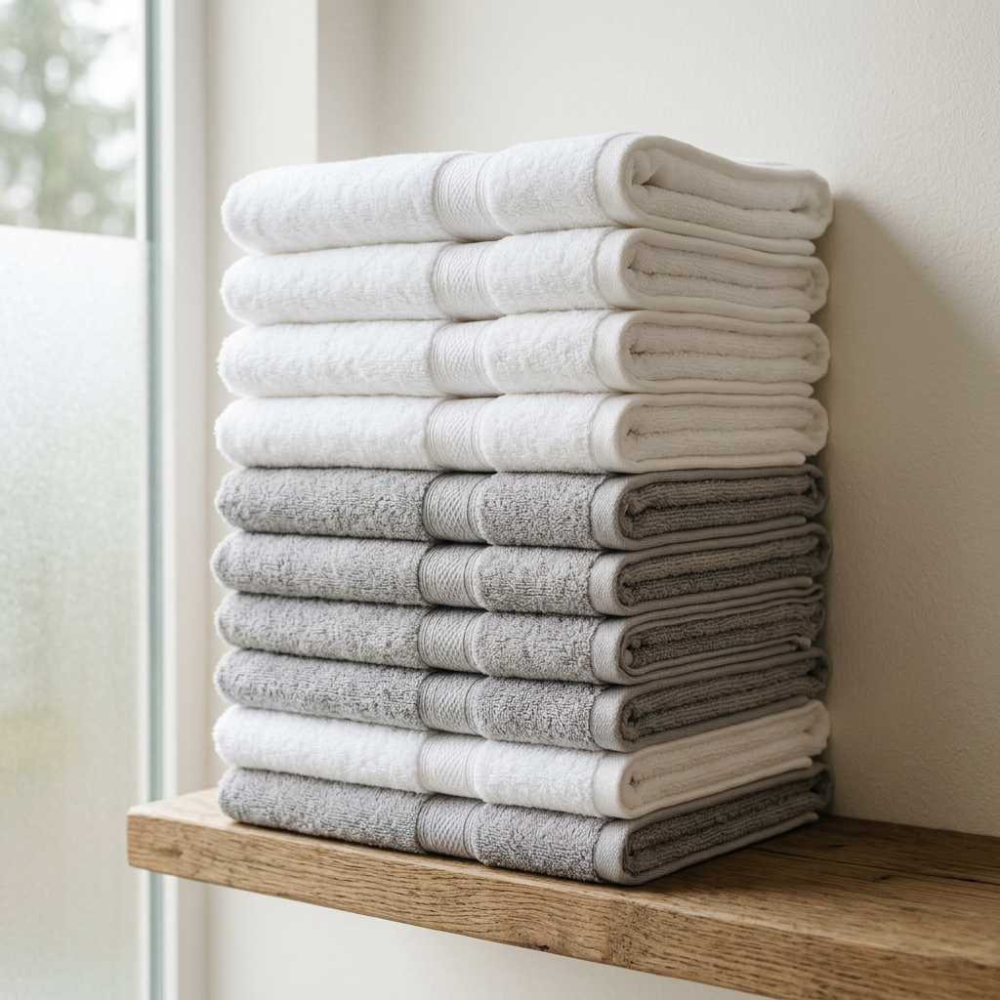
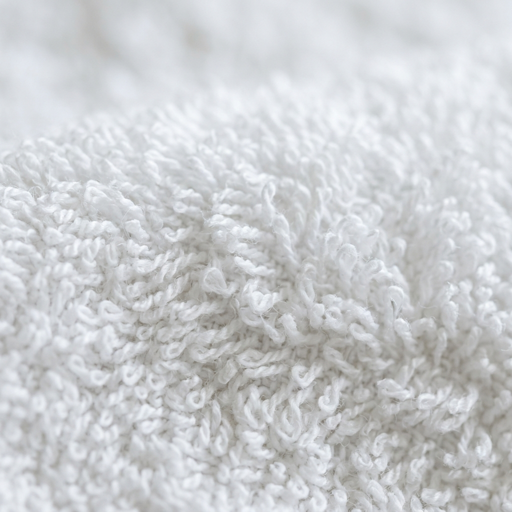
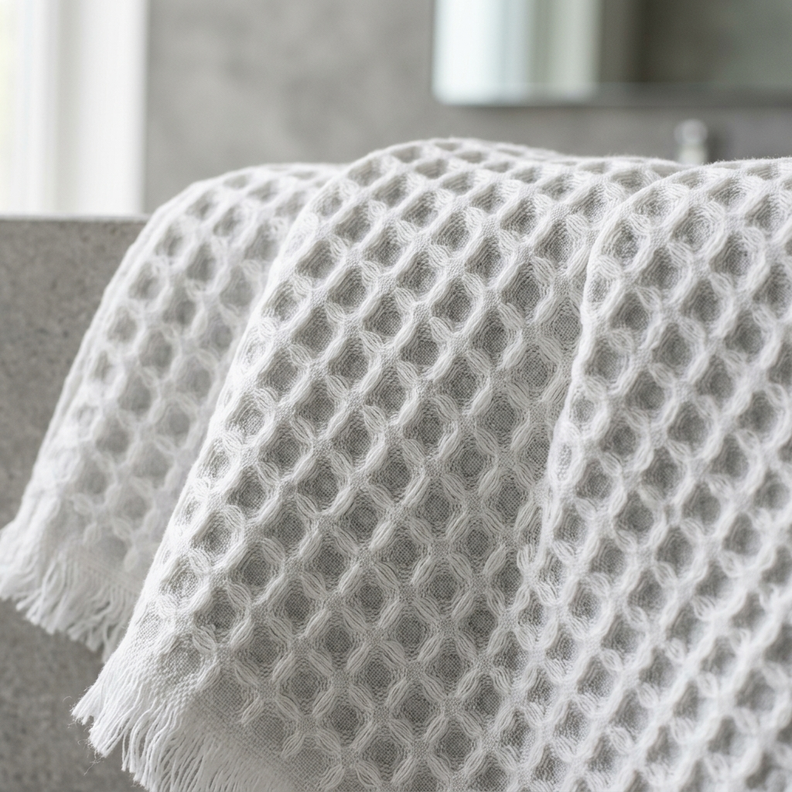
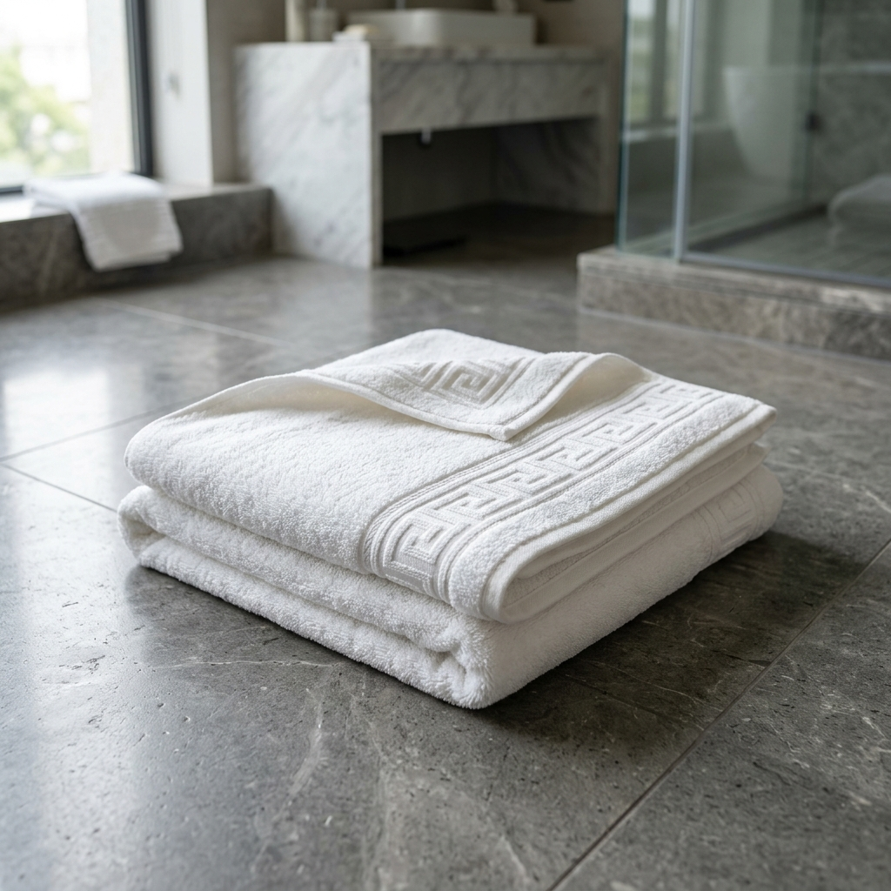

Engenharia têxtil integral,
da conceção da fibra
ao destino internacional.
Apoiados no cluster têxtil de excelência do Norte de Portugal, oferecemos uma resposta flexível às marcas de luxo, retalho especializado e grandes grupos hoteleiros: desde o desenvolvimento integral chave-na-mão (*Turnkey Full-Package*) até à subcontratação técnica por fases industriais.

Teares Eletrónicos Dobby & Jacquard
Capacidade de tecelagem contínua até 280 cm de largura útil com controlo de tensão de urdidura milimétrico e laçadas de alta absorção.
Cadeia Produtiva & Etapas de Fabrico
Explore as 5 etapas da nossa linha de produção. Alterne entre o Ciclo Integral (Turnkey A-Z) e a Seleção Modular para configurar exatamente o âmbito em que pretende a intervenção fabril da DSC.

01 // I&DConceção & I&D
Cálculo de densidades por cm², especificação de gramagens ideais (350g a 900g/m²), fichas técnicas estruturais e modelagem 3D.

02 // MATÉRIAS-PRIMASEngenharia de Fios
Curadoria de algodão penteado de fibra longa, fios retorcidos 2-cabos de alta resistência, tecnologia Zero-Twist e misturas com linho puro.

03 // TECELAGEMTecelagem Estruturada
Tecelagem em teares eletrónicos: laçada de felpo uniforme, relevos Jacquard arquitetónicos, faixas bordadas (borders) e favos waffle 3D.
Enobrecimento & Cor
Tinturaria em banhos otimizados, corantes reativos certificados OEKO-TEX, fixação profunda a 90°C e tratamento hidrófilo instantâneo.

05 // CONFEÇÃOConfeção & Packaging
Corte de precisão, costura com bainhas duplas e cantos travados, colocação de etiquetas personalizadas, embalamento e paletização B2B.
Comparativo de Modelos: Solução Turnkey vs. Subcontratação Modular
Adequamos o nosso modelo operacional à estratégia de sourcing do cliente: desde a gestão integral da coleção até à disponibilização de capacidade de tecelagem e confeção para marcas que já possuem matérias-primas próprias.
Full Package / Turnkey
A DSC assume 100% da responsabilidade técnica e produtiva: fornecimento de fios certificados, formulação de lab-dips, tecelagem, enobrecimento, confeção, etiquetagem privada e envio internacional com entrega na morada do cliente (DDP/CIF).
Subcontratação Modular
Integramos o seu ecossistema produtivo em etapas específicas onde necessita de capacidade adicional de teares eletrónicos, tinturaria contínua ou linhas de confeção automatizada de toalhas e roupões.
| Critério Operacional | Full Package (Chave na Mão) | Subcontratação Modular |
|---|---|---|
| Responsabilidade de Matéria-Prima | DSC assume 100% — Fiações europeias certificadas e controlo laboratorial de lote. | Fornecida pelo cliente com especificações técnicas validadas em receção. |
| Desenvolvimento & Prototipagem | Fichas técnicas completas, lab-dips Pantone e amostras físicas pré-produção. | Execução baseada no caderno de encargos e fichas técnicas enviadas pelo cliente. |
| Controlo de Qualidade & Certificação | Garantia integral DSC com certificado OEKO-TEX Standard 100, GOTS e AQL 2.5. | Garantia focada estritamente na etapa industrial contratada (ex: tecelagem). |
| Packaging & Private Label | Personalização total: etiquetas tecidas em damasco, código EAN-13, fitas e caixas master. | Embalamento a granel em paletes ou acondicionamento segundo instruções logísticas. |
| Logística & Aduaneira | Incoterms flexíveis (FOB, CIF, DDP) com gestão aduaneira completa para UE e exportação. | Geralmente EXW (Ex Works) ou entrega na unidade seguinte da cadeia de valor. |
Capacidade Private Label para Marcas Globais & Hospitality
Concebemos artigos que expressam fielmente a identidade do cliente em cada ponto de contacto visual e tátil.
Etiquetas em Damasco & Cetim
Etiquetas em alta definição com tecelagem de fios finos, cosidas em fita ou dobra terminal, cetim ultrassuave ou algodão orgânico certificado.
Bordaduras & Relevos Jacquard
Logótipos tecidos diretamente na felpa em alto/baixo relevo tridimensional, faixas dobby lisas ou bordados monogramados indeléveis.
Cintas Kraft FSC & Gift Boxes
Cintas em papel kraft reciclado com certificação FSC, sacos compostáveis de base vegetal ou caixas rígidas de luxo para retalho e e-commerce.
EAN-13 & Passaporte DPP
Códigos de barras internacionais EAN-13 e QR Codes estruturados preparados para o Passaporte Digital de Produto da União Europeia.
Prazos de Execução & Lead Times Industriais
Planeamento de produção rigoroso para assegurar que as suas coleções e reposições chegam aos centros de distribuição no timing exato.
Lab Dips & Cor
Formulação em laboratório interno com leitura espectrofotométrica digital contra referências Pantone TCX ou amostra física de cliente.
Amostragem & Toque
Produção de protótipos funcionais com a estrutura, densidade e acabamento final para aprovação técnica do cliente antes do corte em série.
Produção Industrial
Urdissagem, tecelagem contínua, tinturaria e confeção com controlo estatístico de qualidade peça a peça segundo o padrão AQL 2.5.
Despacho & Trânsito UE
Paletização protegida e expedição rápida via frota rodoviária expresso ou Porto de Leixões para Espanha, França, Alemanha e Escandinávia.
Pretende avaliar amostras técnicas ou agendar visita à unidade de Santo Tirso?
A nossa equipa de engenharia têxtil e gestores de conta internacionais estão disponíveis para analisar as suas fichas técnicas, enviar amostras de tecido e apresentar soluções sob medida.